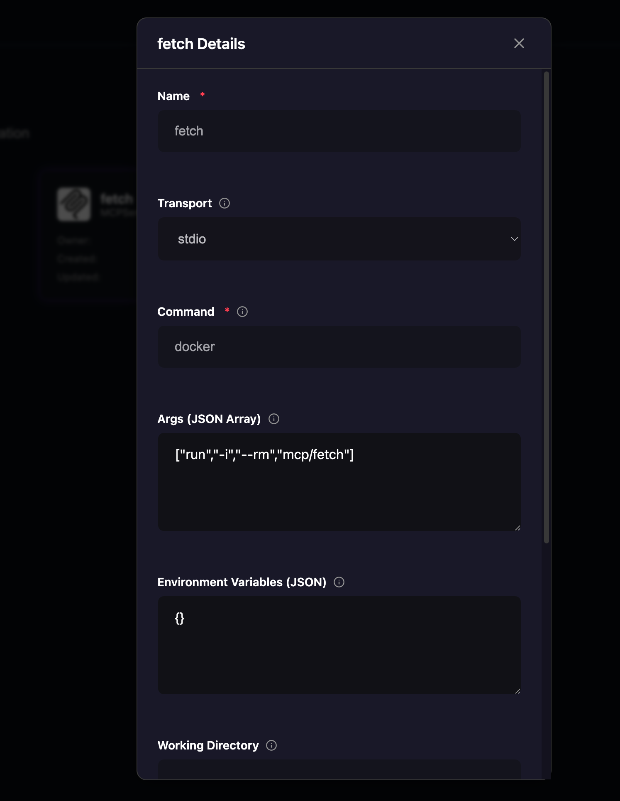
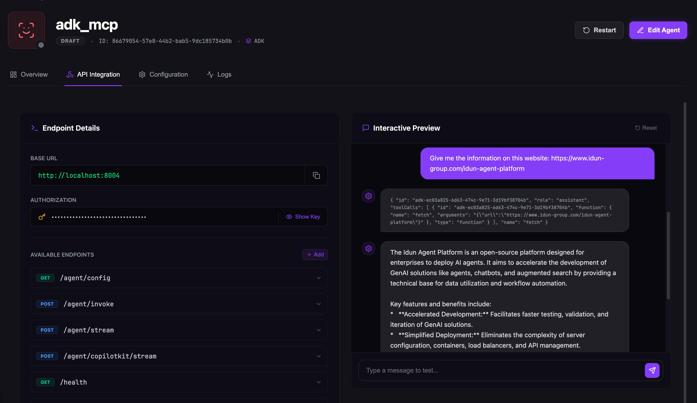

Docker MCP Toolkit¶
The Docker MCP Toolkit is a collection of pre-built Model Context Protocol (MCP) servers packaged as Docker containers. These ready-to-use servers provide common functionality like web fetching, file system access, and database operations without requiring you to write or maintain custom MCP server code.
Key Benefits:
- Zero Setup - Pull and run pre-configured MCP servers
- Isolation - Each server runs in its own container with controlled resource limits
- Standardized - Community-maintained implementations following MCP specifications
- Portable - Works consistently across development and production environments
This guide demonstrates how to integrate MCP servers from the Docker MCP toolkit and give your agents access to Docker MCP tools.¶
What You'll Learn
By the end of this guide, you'll have a fully functional ADK agent that use the web fetching MCP server from Docker toolkit. The agent will be able to retrieve and analyze content from any URL through a simple chat interface.
Prerequisites¶
Before You Begin
Ensure all prerequisites are met before proceeding with the setup.
Before following this guide, you should have completed:
- Quickstart Guide - Set up the Idun Agent Platform and verify it's running
- Agent Framework Setup - Complete one of these guides:
- ADK Agent Setup - If using Google's Agent Development Kit
- LangGraph Agent Setup - If using LangGraph
You should have a working agent before adding MCP integration.
Docker Desktop¶
Download and install from docker.com
docker --version
Fetch MCP Image¶
Pull the official Fetch MCP server image:
docker pull mcp/fetch
Image Ready
Once pulled, the image will be available in Docker Desktop's Images section.
Step 1: Configure Docker Desktop¶
Open Docker Desktop and verify the following:
- Docker Desktop is running
- The
mcp/fetchimage appears in the Images section - MCP extension is enabled (if available)
Docker Ready
With Docker Desktop running and the image available, you're ready to configure the MCP server.
Step 2: Create MCP Server Configuration¶
Access the Idun Manager web interface at http://localhost:3000
Navigate to MCP Servers¶
- Click on MCP Servers in the main navigation
- Click Create MCP Server button
Configure Fetch MCP Server¶
Fill in the MCP server configuration:
| Field | Value | Description |
|---|---|---|
| Name | fetch |
Identifier for this MCP server |
| Transport | stdio |
Communication via standard I/O |
| Command | docker |
Docker CLI command |
| Args | ["run", "-i", "--rm", "mcp/fetch"] |
Docker run arguments as JSON array |
Args Format
The Args field must be a valid JSON array. Copy the entire value including brackets:
["run", "-i", "--rm", "mcp/fetch"]
What These Args Do
run- Execute a new container-i- Interactive mode (keeps STDIN open for communication)--rm- Automatically remove container when it stopsmcp/fetch- The Docker image to run
Save MCP Configuration¶

The MCP configuration form showing stdio transport, docker command, and args as a JSON array
Click Save to create the MCP server configuration.
MCP Server Created
Your Fetch MCP server configuration is now available and can be attached to any agent.
Step 3: Attach MCP Server to Your Agent¶
Now that the MCP server is configured, attach it to your existing agent.
Edit Your Agent¶
- Navigate to Agents in the main navigation
- Find your agent in the list
- Click Edit on your agent
Add MCP Server¶
- Scroll to the MCP Servers section
- Click Add MCP Server
- Select fetch from the dropdown of available MCP servers
- Click Save to update your agent configuration

Selecting the Fetch MCP server from the dropdown when editing an agent
Configuration Updated
Your agent is now configured with the Fetch MCP server and ready to use MCP tools.
Step 4: Integrate MCP Tools in Your Agent Code¶
Now that your agent is configured with the MCP server, you need to integrate the MCP tools into your agent code.
Set Environment Variables¶
The agent engine needs to know where to fetch the configuration and authenticate. Set these environment variables:
export IDUN_MANAGER_HOST="http://localhost:8080"
export IDUN_AGENT_API_KEY="YOUR_AGENT_API_KEY"
Finding Your API Key
You can find your agent's API key in the Manager UI under the agent's details page.
Import MCP Tools¶
The Idun Agent Engine provides helper functions to retrieve MCP tools configured for your agent. Choose the appropriate function based on your agent framework:
For ADK Agents¶
Use get_adk_tools() to retrieve tools in ADK format:
from google.adk.agents import LlmAgent
from idun_agent_engine.mcp import get_adk_tools
from pathlib import Path
import os
os.environ["GOOGLE_GENAI_USE_VERTEXAI"] = "TRUE"
os.environ["GOOGLE_CLOUD_PROJECT"] = "your-project-id"
os.environ["GOOGLE_CLOUD_LOCATION"] = "us-central1"
def get_current_time(city: str) -> dict:
"""Returns the current time in a specified city."""
return {"status": "success", "city": city, "time": "10:30 AM"}
idun_tools = get_adk_tools()
tools = [get_current_time] + idun_tools
root_agent = LlmAgent(
model='gemini-2.5-flash',
name='root_agent',
description="Tells the current time in a specified city.",
instruction="You are a helpful assistant that tells the current time in cities.",
tools=tools,
)
For LangGraph Agents¶
Use get_langchain_tools() to retrieve tools in LangChain format:
from idun_agent_engine.mcp import get_langchain_tools
# Get MCP tools configured for this agent
mcp_tools = await get_langchain_tools()
# Add to your agent's tools list
all_tools = [
*mcp_tools, # MCP tools
# ... your other tools
]
# Bind tools to your model
model_with_tools = model.bind_tools(all_tools)
Complete LangGraph Example:
from langgraph.prebuilt import create_react_agent
from langchain_openai import ChatOpenAI
from idun_agent_engine.mcp import get_langchain_tools
# Initialize your model
model = ChatOpenAI(model="gpt-4")
# Retrieve MCP tools
mcp_tools = await get_langchain_tools()
# Create agent with MCP tools
agent = create_react_agent(
model=model,
tools=mcp_tools,
state_modifier="You are a helpful assistant with access to web content fetching."
)
Automatic Tool Discovery
The get_adk_tools() and get_langchain_tools() functions automatically discover all MCP servers attached to your agent and make their tools available. You don't need to configure individual tools.
Async Function
get_langchain_tools() is an async function. Make sure to use await when calling it.
Step 5: Launch Your Agent¶
Navigate to the agent directory and start the engine:
cd demo-adk-idun-agent
export IDUN_MANAGER_HOST="http://localhost:8080"
export IDUN_AGENT_API_KEY="YOUR_AGENT_API_KEY"
idun agent serve --source manager
Initialization Process¶
The engine will perform the following steps:
- Load Configuration - Fetch agent config from Manager API
- Initialize ADK Agent - Set up session and memory services
- Start MCP Server - Launch Fetch MCP as Docker container
- Register Tools - Make fetch tool available to agent
- Start API Server - Serve at
http://localhost:8000
Agent Running
When you see "Uvicorn running on http://localhost:8000", your agent is ready to accept requests.
Step 6: Test MCP Integration¶
Access API Integration¶
In the Manager UI:
- Navigate to your agent in the Agents list
- Click on the API Integration tab
- You'll see a chat interface
Interactive Testing
The API Integration page provides a real-time chat interface for testing your agent without writing any code.
Test Queries¶
Try these example queries in the chat interface:
Example 1: Company Information
Give me the information on this website: https://www.idun-group.com/idun-agent-platform
Example 2: News Summary
Go to https://news.ycombinator.com and summarize the top 3 stories
Example 3: Trending Repositories
Fetch https://github.com/trending and list the trending repositories
How It Works¶
When you send a query:
- Agent receives your message
- Recognizes it needs web content
- Invokes the Fetch MCP tool
- Docker container retrieves URL content
- Agent processes and responds with analyzed information

The chat interface showing successful use of the Fetch MCP tool to retrieve and analyze web content
MCP Working
If the agent successfully fetches and analyzes web content, your MCP integration is working correctly.
Verify MCP Server¶
Check Docker Container¶
View running MCP containers:
docker ps | grep mcp/fetch
View Logs¶
Check MCP server logs for debugging:
docker logs $(docker ps -q --filter ancestor=mcp/fetch)
Troubleshooting
If the agent isn't using the fetch tool, check these logs first for connection or execution errors.
Advanced Configuration¶
Multiple MCP Servers¶
Enhance your agent with additional MCP servers by adding more configurations in the Manager UI.
Filesystem Access¶
| Field | Value |
|---|---|
| Name | filesystem |
| Transport | stdio |
| Command | npx |
| Args | ["-y", "@modelcontextprotocol/server-filesystem", "/allowed/path"] |
Use Case
Allows the agent to read, write, and manipulate files within specified directories.
Custom MCP Server¶
| Field | Value |
|---|---|
| Name | custom |
| Transport | stdio |
| Command | docker |
| Args | ["run", "-i", "--rm", "your-registry/your-mcp:latest"] |
Use Case
Deploy your own custom MCP servers for specialized functionality like database access, API integrations, or internal tools.
Troubleshooting¶
Docker Issues¶
MCP Server Fails to Connect
Symptoms: Agent starts but MCP tools aren't available
Solutions:
- Verify Docker Desktop is running:
docker info - Check image exists:
docker images | grep mcp/fetch - Test container manually:
docker run -i --rm mcp/fetch - Review Docker Desktop logs
MCP Tool Not Working¶
Agent Doesn't Use Fetch Tool
Symptoms: Agent responds but doesn't fetch web content
Solutions:
- Check Docker container is running:
docker ps | grep mcp/fetch - Review MCP server logs:
docker logs <container_id> - Try explicit query: "Use the fetch tool to get https://example.com"
- Restart the agent
- Verify MCP config saved correctly in Manager UI
Configuration Errors¶
Args Format Invalid
Symptoms: "Invalid args format" error when saving
Solution: Ensure args is a properly formatted JSON array
✅ Correct:
["run", "-i", "--rm", "mcp/fetch"]
❌ Incorrect:
run -i --rm mcp/fetch
❌ Incorrect:
["run -i --rm mcp/fetch"]
Best Practices¶
Naming Convention
Use descriptive, lowercase names for MCP servers: fetch, filesystem, database
Incremental Testing
Add one MCP server at a time. Test functionality before adding additional servers.
Monitor Performance
Use observability features to track MCP server latency and identify performance bottlenecks.
Secure Credentials
Never hardcode sensitive information in MCP configurations. Always use environment variables.
Resource Limits
In production environments, set Docker resource constraints to prevent runaway resource usage:
["run", "-i", "--rm", "--memory=512m", "--cpus=0.5", "mcp/fetch"]
Logging
Configure Docker logging for better observability:
["run", "-i", "--rm", "--log-driver=json-file", "--log-opt=max-size=10m", "mcp/fetch"]
Next Steps¶
Ready to explore more? Check out these resources:
Related Documentation
MCP Protocol - Learn about the Model Context Protocol specification and how to build custom MCP servers
ADK Documentation - Explore Google's Agent Development Kit features and capabilities
Observability Guide - Set up monitoring and tracing for your agents
Configuration Reference - Detailed documentation on all MCP configuration options
Need Help?
If you encounter issues not covered in this guide, check the FAQ or open an issue.